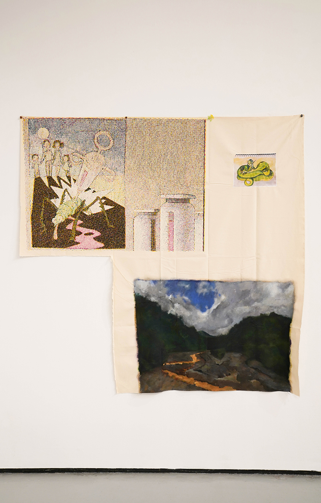
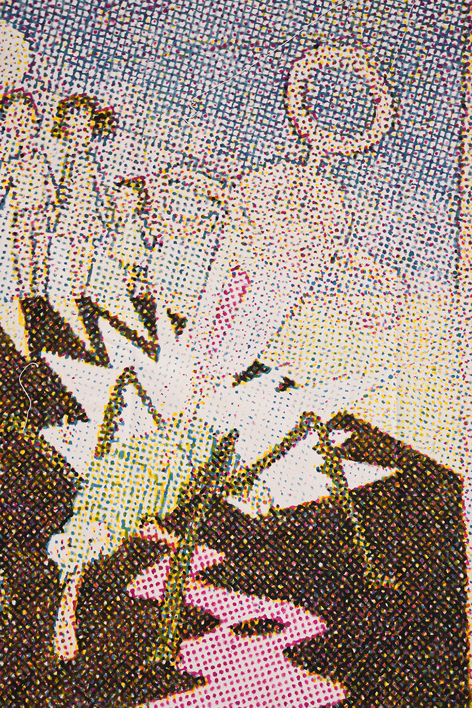
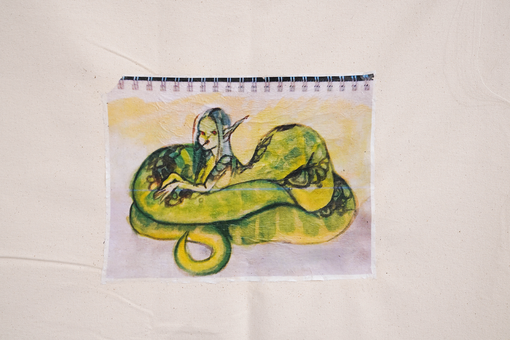
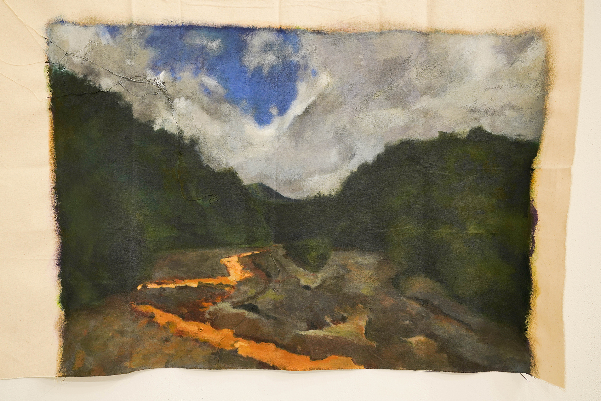
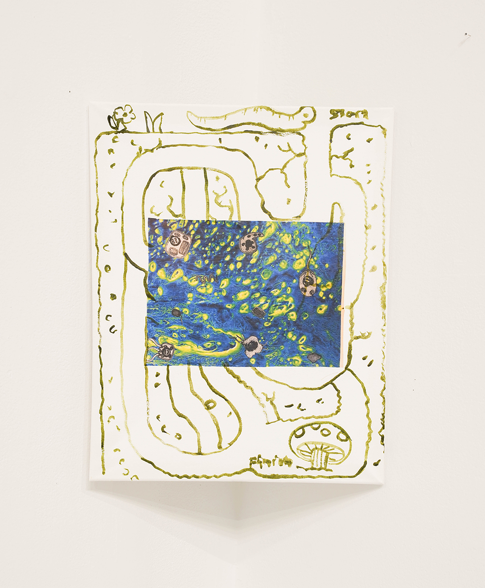
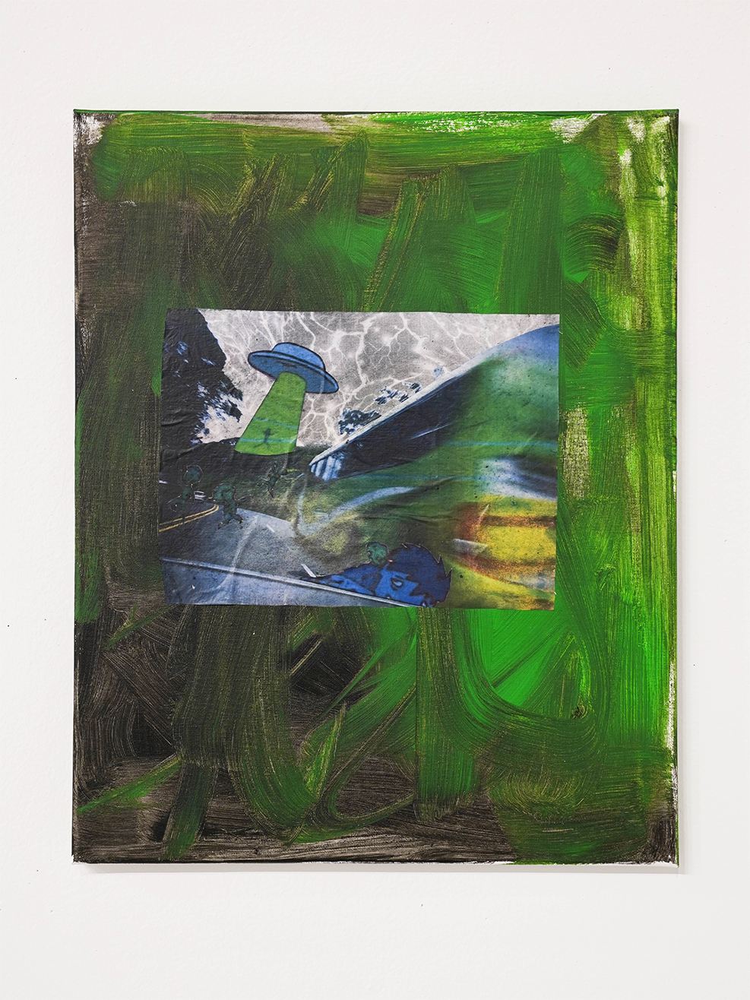
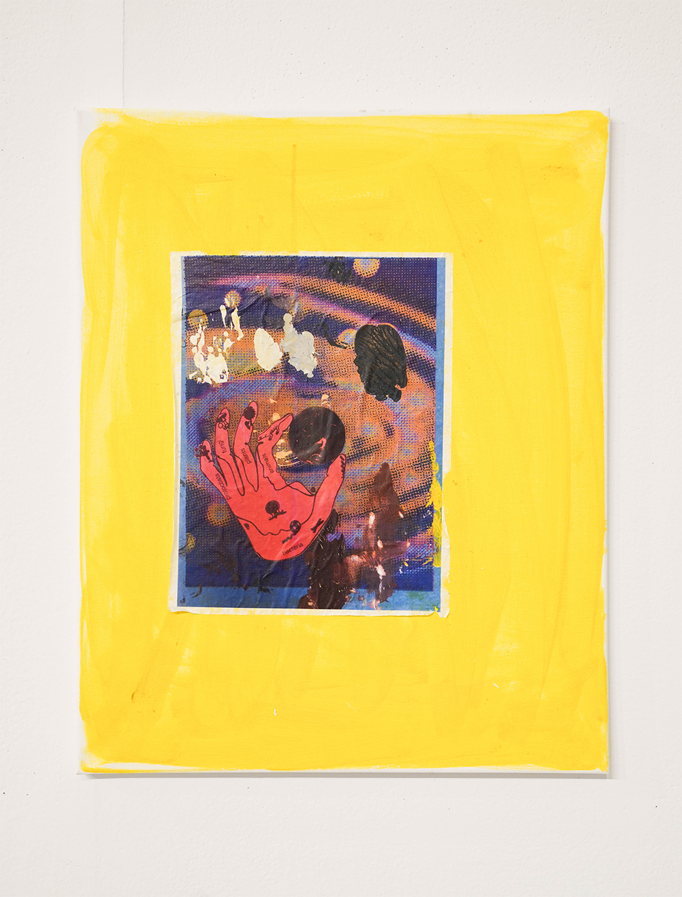
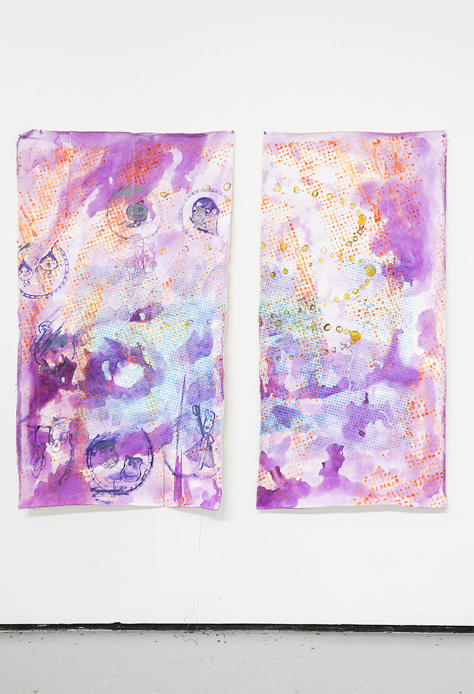
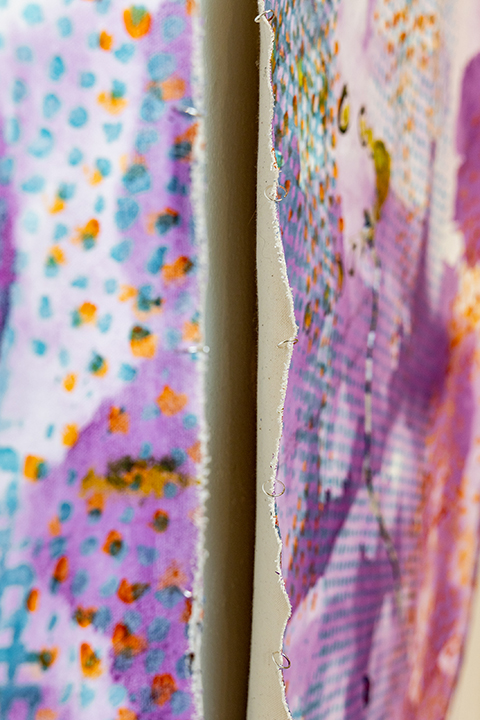

Tamen Pérez, Venganza Mitológica 2020, acrylic transfer and paint on canvas, 80 × 72″">
Tamen Pérez, Venganza Mitológica 2020, acrylic transfer and paint on canvas, 80 × 72″">
Tamen Pérez, Venganza Mitológica 2020, acrylic transfer and paint on canvas, 80 × 72″">
Tamen Pérez, Venganza Mitológica 2020, acrylic transfer and paint on canvas, 80 × 72″">
Tamen Pérez, Del gusano al hongo y de vuelta 2020, acrylic transfer and paint on canvas, 18 × 24″">
Tamen Pérez, De camino a Guápiles 2020, acrylic transfer and paint on canvas, 18 × 24″">
Tamen Pérez, Anastomosis 2020, acrylic transfer and paint on canvas, 18 × 24″">
Tamen Pérez, Remolino 2019-2020, mixed media and acrylic on canvas, 76 × 70″">
Tamen Pérez, Remolino 2019-2020, mixed media and acrylic on canvas, 76 × 70″">
Tamen Pérez (b.1987 San Jos é , Costa Rica) uses paint as a speculative technology to dream of different pasts and futures in non-linear temporality. Exploring relationships between photographic and digital images, Pérez examines the way that the eurocentric painting tradition is complicit and entangled with colonial violence and erasure. She draws on sources ranging from biographical to archaeological and archival, and processes them through a variety of painting and printmaking methods. Her work proposes a landscape grounded in multiplicities of selves and experiences.
She holds a BFA in painting from the Rhode Island School of Design and participated in the Berlin based residency, Berlin Program for Artists. Her first solo exhibition was at Stadium Gallery (Berlin, DE) and she has a forthcoming solo show at Y2K Group (New York, N.Y.)